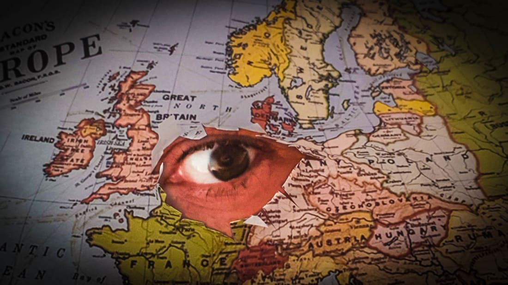

Barry Neild, CNN • Updated 16th September 2020
(CNN) — Despite its exotic name, there's a very good reason you've never booked a vacation to the Quilombo of Palmeres. Same goes for the Islands of Refreshment, the Fiume Endeavour and Neutral Moresnet.
They no longer exist.
While the map of the world may look set in stone, it is in fact fluid, with borders constantly shifting due to the forces of geology, politics, conflict or money.
Along the way, numerous new nations have popped into existence, only to be snuffed out a few years, or even days, later when circumstances change once again.
And, as is made very apparent in a new book, "The Atlas of Extinct Countries" by writer Gideon Defoe, the reason for their demise isn't always a result of international diplomacy, brinkmanship or peace treaty.